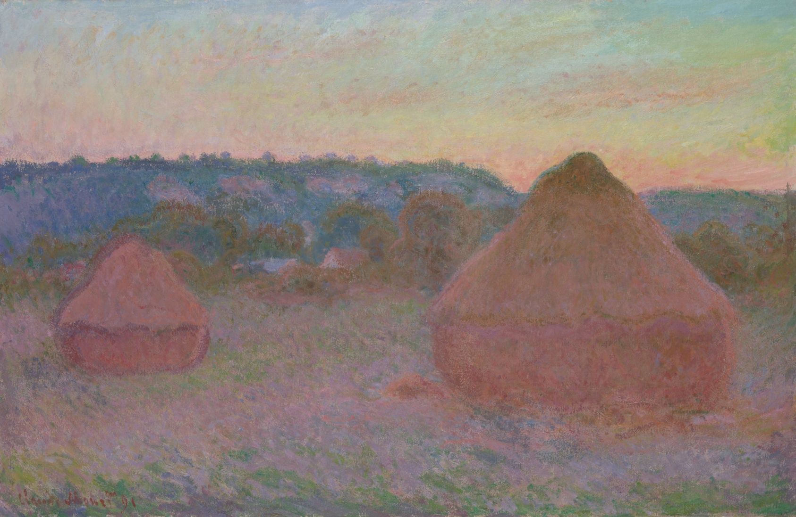
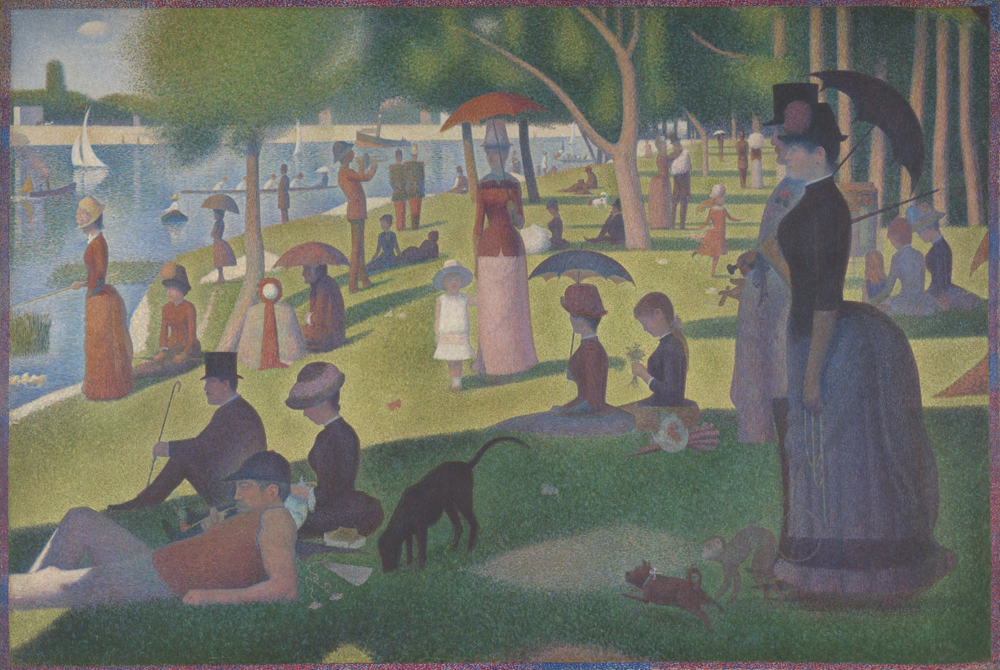
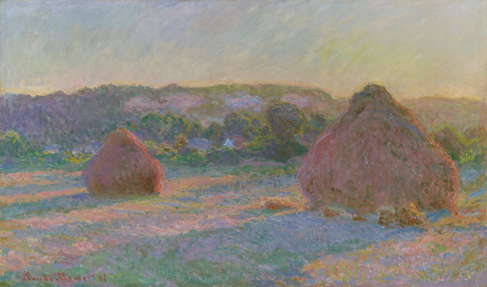
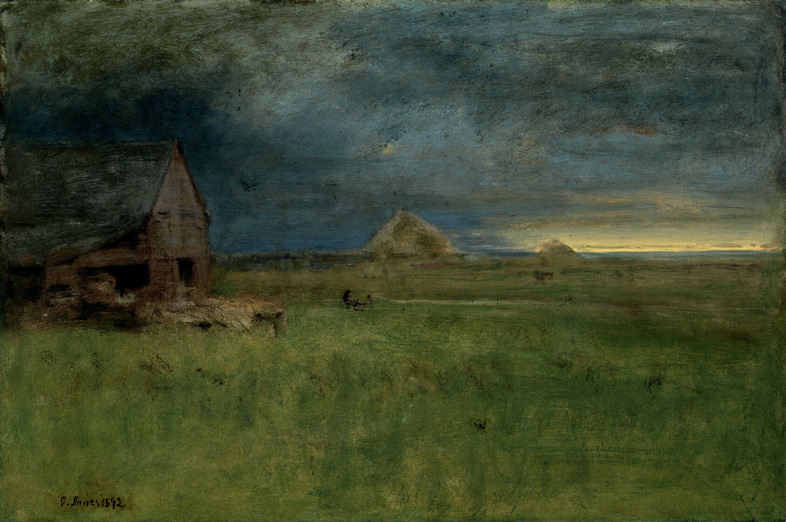

One deck for
all your code and every
agent in it.
How Codedeck looks, sounds and moves, and how it gets in front of the developers it's for. Every colour, face and line below comes from the product itself.

Essence
Why it existsDevelopers now work across dozens of folders and hundreds of agent sessions. Codedeck is the calm place where all of it shows up, already sorted.
Codedeck finds every project on your Mac and every Claude Code, Codex and OpenCode session that belongs to it, so you always know where you left off.
Nothing to set up
Point it at a folder. It finds the projects, the branches, the uncommitted files and the conversations by itself.
Your work stays yours
No account, no cloud, no AI. It reads local history and never sends it anywhere.
A calm room
White space, a painting in the morning and soft motion. The opposite of a dashboard shouting at you.
Personality
We are / we are notMark & mascot
The red robotThe mark is the robot: a stamp-red face with a black visor and a lit slit. The wordmark is Instrument Sans Semibold, set tight. The robot is the logo, the app icon and the character.
CodedeckCodedeckCodedeckOne visor height on every side. Nothing enters it.
Robot 16px on screen (menu bar), 8mm in print. The wordmark drops out below 24px.
Horizontal by default; stacked on square formats (stickers, avatars).
Every project gets its own DiceBear bot. Only Codedeck itself is red.
Moods
The robot reacts; it never talks in copyDon't
MisusePalette
Paper, ink, one red, a meadowWhite paper and ink do almost all the work. Stamp red is the only brand colour. The meadow colours come from the onboarding film and belong to marketing and moments, never to everyday UI. The dithered strip under each swatch is its tint ladder, drawn the way the pixel film is.
Core
Every surfaceMeadow
Film, marketing, illustrationSignal
Product states onlyProportion
How much of each, on any surfacePaper dominates. If a screen or post looks colourful, take colour out.
Neutrals
Text, lines, fills (light → dark mode values)Pairings
Contrast checked live (WCAG 2.2)Type
Three voicesA plain sans does the talking, a soft italic serif lands on one or two words, and a mono labels things. Never more than one italic phrase per heading.
Instrument Sans
400 · 500 · 600 · OFLFraunces Italic
350 · opsz 144 · OFLGeist Mono
400 · 500 · OFLScale
App and webMotion
Things are soft and physicalEverything springs and nothing eases linearly. A button squashes when you press it and jellies when you let go; a selector stretches toward its target before it settles. Motion is the one place the brand gets playful.
Springs with overshoot: knobs, highlights, toggles.
Tight. Cards fade and rise 8px, 40ms stagger. No bounce on text.
Spinners, drop shadows, parallax on scroll, motion while typing.
Reduce Motion turns every spring into a plain fade.
Imagery
Paintings & pixelsTwo sources only: public-domain paintings (Monet, Seurat, Inness, via the Art Institute of Chicago, CC0), always credited; and the pixel meadow from the onboarding film. No stock photos, no 3D blobs, no AI art.

Morning · Monet, Stacks of Wheat (End of Day, Autumn)
Afternoon · Seurat, La Grande Jatte
Evening · Monet, Stacks of Wheat (End of Summer)
Night · Inness, The Lonely Farm, NantucketThe painting is the hero, never the background noise
Full-bleed with one line of serif on it and a credit in the corner. Darken only the bottom third so the words read.
Pixels are for moments
The pixel meadow appears on first launch, in launch videos and on stickers. Daily UI stays clean vector.
Voice
How it writesShort, specific, kind. Use numbers the product actually measured. Name the thing; skip the adjective.
“One agent is running right now. 163 files are waiting to be committed.”
“3 sessions · open to continue”
“Codedeck reads agent history locally. Only project names leave, as avatar seeds.”
“I had 37 projects and 436 agent conversations. I couldn't find any of them.”
“Every project on your Mac, and every Claude session that belongs to it.”
“No account. No cloud. One price.”
Brand portfolio
The system, appliedThe pieces a launch needs, built from the rules above. Use these as the templates.
Codedeck·1 runningopen tocontinue
37 projects. 436 agent sessions.
I couldn't find any of them.
codedeck.appand every agent in it.
Thank youPaste it into Codedeck → License. It works on 3 Macs. Your projects and sessions never leave them. Reply to this email if anything's off; a person reads it.
Taking it to market
Positioning · content · launchCodedeck sells best to people who already feel the problem: developers running Claude Code, Codex or OpenCode across many repos. The plan is to show the problem with real numbers, show the craft in short clips, and launch where those developers already gather.
Agent-heavy developers on a Mac
Indie hackers, freelancers, staff engineers juggling 10–50 repos with several coding agents.
“Where was I?”
Sessions buried in ~/.claude, branches forgotten, uncommitted work scattered across folders.
15 days free, then one price
No subscription, no account. That's a reason to share it, in a market tired of subscriptions.